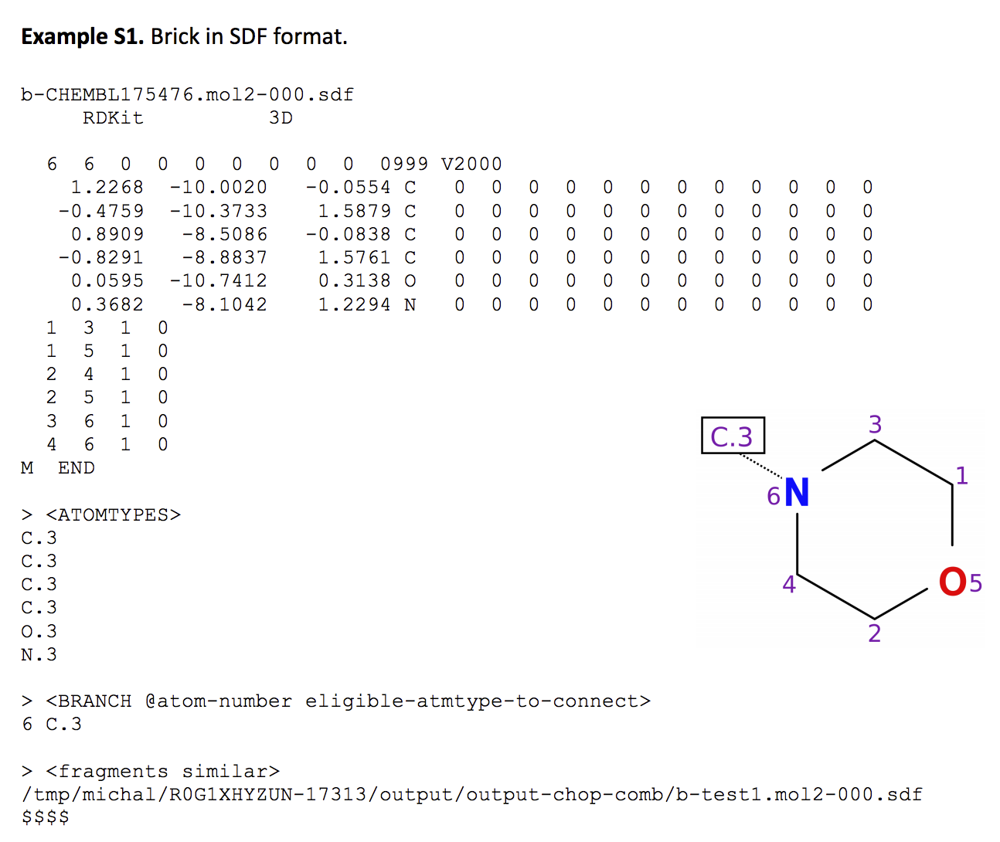
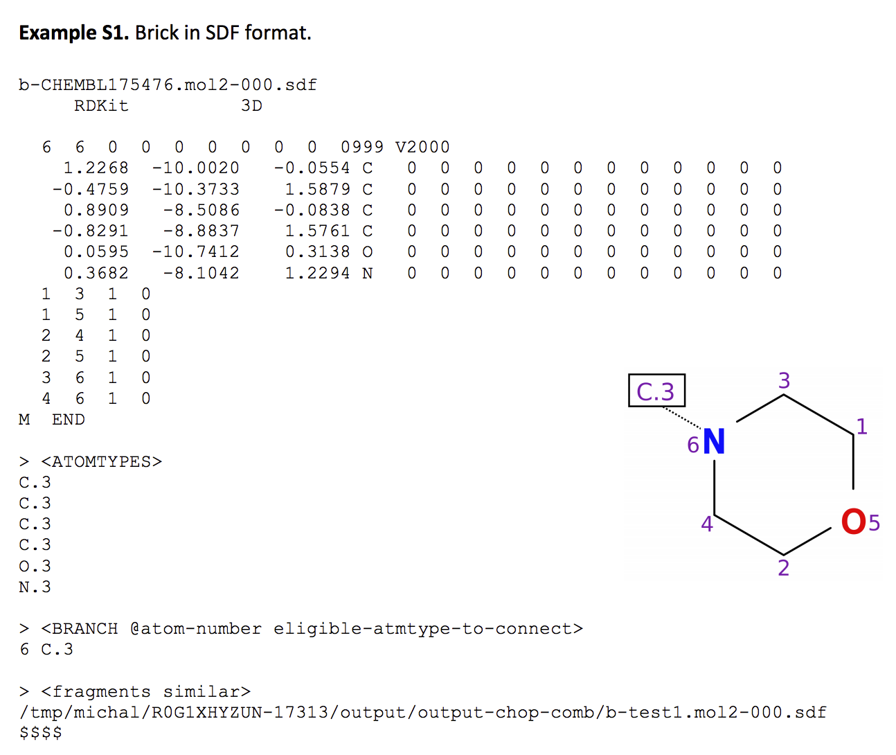

分子片段化
Constructing high-quality libraries of molecular building blocks is essential for successful fragment-based drug discovery. Given a collection of molecules, fragmentation generates a set of unique fragments comprising larger moieties, bricks, and smaller linkers connecting bricks. These building blocks can subsequently be used to construct virtual screening libraries for targeted drug discovery.
fragment相关工具
| Year | Paper | Code | Note |
|---|---|---|---|
| 2017 | eMolFrag | https://github.com/liutairan/eMolFrag | note |
| 2017 | Fragmenter | From ChemAxon | |
| 2014 | molBLOCKS | https://compbio.cs.princeton.edu/molblocks/ | Note |
synthesis相关工具
| Year | Paper | Code | Note |
|---|---|---|---|
| 2016 | eSynth | https://github.com/liutairan/eSynth | Note |
| 2008 | CONFIRM | [Note] | |
| 2018 | AutoGrow v3.1.3 | https://git.durrantlab.pitt.edu/jdurrant/autogrow/tree/master | Note |
De novo drug design
| Year | Paper | Code | Note |
|---|---|---|---|
| 1992 | LUDI | binding-site point connection | |
| 1992 | LEA3D | fragment connection | |
| 2011 | Ligbuilder | fragment connection | |
| 2016 | eSynth | fragment connection | |
| 1991 | LEGEND | sequential build-up | |
| 1993 | SPROUT | sequential build-up | |
| 2004 | CoG | random connection | |
| 2007 | Flux | random connection |
eMolFrag
- de novo drug design require an initial set of building blocks or fragments
- then efficient fragmentation techniques,
- RECAP: Retrosynthetic combinatorial analysis procedure
- dissected based on a set of 11 bond types, following simple rules such as leaving cyclic bonds and alkyl groups smaller than five carbons intact. These rules ensure that major structural features of organic compounds, such as ring motifs, are preserved.
- BRICS: breaking retrosynthetically interesting chemical substructures
- the bond type criteria used by RECAP from 11 to 16 taking into account the chemical environment of each bond type and the surrounding substructures. Additional filters are also applied in order to prevent generating small and unwanted fragments.
- Scaffold_Tree: extract and classify chemical scaffolds by pruning side chains and removing peripheral ring moieties.
- RECAP: Retrosynthetic combinatorial analysis procedure
- current drawback: not consider the chemical context of the fragments. the connectivity information on a fragment is not stored while extracting building blocks
- goal: decomposed into two types of building blocks: bricks and connecting linkers
- method:
- Fragmentation: BRICKS, 16 chemical environments defined. A brick fragment is a molecular construct having at least four non-hydrogen atoms. Subsequently, bricks are removed from a molecule and the remaining fragments are classified as linkers.


- Mitigation of Fragment Redundancy based on Tanimoto coefficient
- Fragmentation: BRICKS, 16 chemical environments defined. A brick fragment is a molecular construct having at least four non-hydrogen atoms. Subsequently, bricks are removed from a molecule and the remaining fragments are classified as linkers.

- Dataset: DUD-E 20408 active compds. against 102 targets.
- Application to Antagonists of the Adenosine Receptor.
AutoGrow
TODO
Fragmenter
TODO
molBLOCKS
TODO